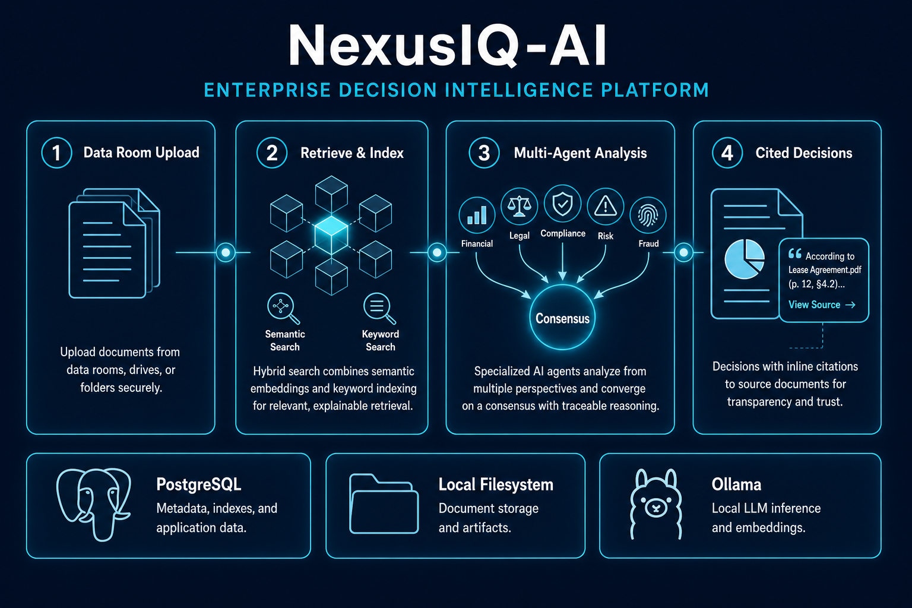

Web · Enterprise AI · Completed MVP
NexusIQ AI
An enterprise decision-intelligence platform for due diligence: upload a data room, retrieve with hybrid search, run five specialist agents in parallel, and leave with cited decisions — not a black-box summary.
NexusIQ is a completed, demoable MVP. Organizations, workspaces, and projects sit on Auth.js + RBAC. Documents flow through OCR, chunking, and embeddings into Financial, Legal, Compliance, Risk, and Fraud agents. Consensus, contradictions, missing-evidence checklists, a risk simulator, action-plan kanban, and multi-format report export close the analyst loop — on Vercel + Supabase with local Ollama inference at zero paid AI API cost.
Overview
At a glance
Product type
Web · Enterprise SaaS · Multi-agent diligence
My contribution
Product design, RAG + multi-agent architecture, data room, RBAC, risk surfaces, report export, Admin ops, Vercel/Supabase deploy
Users
Deal analysts, reviewers, and org owners running M&A and investment diligence
Stack
Next.js 15, React 19, Prisma, PostgreSQL + pgvector, Supabase, Auth.js, Ollama
Visual proof
Interface & artifacts
Product architecture and decision flow — how documents become cited, explainable recommendations.

Context
Background & origin
Traditional diligence is slow and fragmented. Analysts download folders of PDFs, chase numbers across spreadsheets, and reconcile conflicting statements by hand before a partner will trust a board memo. Generative AI promised speed — then delivered uncited paragraphs nobody can defend in a deal room.
NexusIQ is built for that reality. The product assumes documents are messy, agents will disagree, and every recommendation must point back to a page and clause. The experience target is deliberate: Palantir-depth analysis, Bloomberg-level clarity, Deloitte-grade diligence discipline, and Stripe-level product polish — without paying per-token API fees.
Retrieve before reason. Cite every claim. Show every disagreement. Never ship a black-box recommendation into a deal room.
Problem
The challenge
Diligence is not a chat problem. A usable system has to ingest entire data rooms, index them for both keyword and semantic recall, run domain specialists that can disagree in public, and still produce artifacts a partner can open in a meeting — PDF, spreadsheet, or slide deck.
Trust collapses if the model invents conflicts or hides uncertainty. Engineering had to make citations first-class, keep inference optional for cloud demos (Ollama is local or linked), and ensure report assembly never depends on a live LLM call at download time.
Strategy
Goals & constraints
- Make onboarding feel like a real SaaS product: register → organization → workspace → project, with role-based access from Owner to Viewer
- Treat the data room as the source of truth — folders, versions, previews, classification, retention, and share links
- Index documents for hybrid retrieval so agents and chat answer from evidence, not vibes
- Run Financial, Legal, Compliance, Risk, and Fraud agents in parallel and synthesize an explainable consensus
- Surface cross-document contradictions and missing evidence against deal-type checklists
- Let analysts stress-test assumptions in a risk simulator and turn findings into an action-plan kanban
- Export Executive, Board, Investment Memo, Audit, and Risk Register packs locally as Markdown, PDF, XLSX, PPTX, or ZIP
- Ship History, Settings, and owner Admin so the product feels operable — not a prototype dashboard
System
Architecture overview
NexusIQ is a modular monolith: Next.js App Router for the product UI and API routes, Prisma over PostgreSQL 16 with pgvector for embeddings, and Supabase for production database pooling and file storage. Feature folders own their domain end-to-end — data room, intelligence, contradictions, reports — instead of a sprawling shared services layer.
The decision pipeline mirrors the product story. Documents land in the data room, get indexed for hybrid retrieval, then feed specialist agents that converge on consensus with citations. PostgreSQL holds metadata and vectors; the filesystem (or Supabase Storage) holds originals; Ollama supplies local LLM and embedding inference when available. Chat, agents, contradiction scans, and simulations need a reachable Ollama endpoint. Missing-info checklists, risk rollups, action plans, History, Settings, and report export keep working from stored artifacts when inference is offline — so the Vercel demo stays useful without a public LLM.
Delivery
What I built
I designed and built the full product loop as a solo engineer — from auth and org tenancy through multi-agent intelligence, diligence tooling, and operator Admin.
Organization & access model
Three-step onboarding into org → workspace → project. Owner, Admin, Analyst, Reviewer, and Viewer roles gate every API. Invites, in-app notifications, and deferred account deletion match real SaaS expectations.
Production data room
Folder trees with drag-drop and bulk upload, version compare, PDF/Office/image preview, classification tags, retention/trash, audit CSV export, and deep links into specific documents.
Document intelligence pipeline
Classify → OCR → chunk → embed → named-entity extraction. Hybrid search blends keyword and semantic retrieval; chat streams answers with confidence and inline citations.
Multi-agent analysis
Financial, Legal, Compliance, Risk, and Fraud specialists run in parallel. An Executive package and consensus view show where agents agree, where they diverge, and which documents support each claim.
Contradiction detection
Citation-validated cross-document fact conflicts with side-by-side evidence, severity and status badges, resolution notes, and promote-to-finding for the risk register.
Missing information & risk overview
Deal-type checklists compared against the data room (expected folders and evidence gaps). Enterprise risk score, severity heatmap, and rollups of open findings plus contradictions.
Risk simulator & action plan
What-if scenarios (revenue, churn, lawsuit, price, custom) measured against Financial and Risk baselines with score deltas and run history. Kanban action plans with assignees, priorities, and suggest-from-intelligence without requiring a live model.
Board-ready reporting
Executive, Board, Investment Memo, Audit, Risk Register, and Action Plan outputs. Local generators for Markdown, PDF, XLSX, PPTX, and ZIP — plus share links and compare views.
Timeline, graph & audit
AI and manual timeline events, relationship force graph, org/project History with filters and project score compare.
Settings & Admin
Profile, security, notification prefs, Ollama model settings, dark/light appearance, keyboard shortcuts. Owner Admin covers DB/Ollama/storage health, usage charts, failed-doc retry, and FTS/embeddings reindex.
Technical
Deep dives
Cited consensus instead of averaged scores
Each specialist returns structured findings tied to retrieved chunks. Consensus does not collapse five opinions into one mystery number — it stores per-agent rationale and resolution notes so a reviewer can see disagreement as signal. That design choice is the product: diligence without explainability is just faster guessing.
Hybrid retrieval before any generation
Agents and chat are forced through keyword + semantic retrieval over chunked embeddings. Contradiction scans validate that alleged conflicts still map to real citations. If the evidence is missing, the system surfaces a gap instead of inventing a bridge between two PDFs.
Inference-optional cloud demo
Vercel hosts the app; Supabase hosts data and files; Ollama stays local or optionally linked over HTTPS. Surfaces that only need stored intelligence — checklists, risk rollups, action plans, History, report assembly — work without a live model. Agent paths fail clearly when Ollama is unreachable rather than silently fabricating answers.
Export that never calls the LLM
PDF, spreadsheet, and slide generators assemble from persisted intelligence artifacts. That keeps board packs reproducible, offline-friendly, and free of surprise token costs at the moment a partner asks for the deck.
Process
Timeline & phases
Foundation
Auth, organizations, workspaces, projects, RBAC, notifications
SaaS shell reviewers can register into and invite teammates
Ingest & retrieve
Data room, document pipeline, hybrid search, cited chat
Evidence layer before any agent reasoning
Intelligence core
Specialist agents, consensus, timeline, relationship graph, reports
Parallel analysis with exportable Executive and Board packs
Diligence loop
Contradictions, missing info, risks, simulator, action plan
From findings to decisions and follow-ups
Operate & ship
History, Settings, Admin, tests, Vercel + Supabase deploy
Completed MVP with live public demo
Impact
Results & outcomes
NexusIQ is a completed enterprise diligence MVP — register, ingest a data room, run analysis, and walk out with cited artifacts.
- End-to-end diligence workflow live on Vercel with dual-theme premium UI
- Five specialist agents plus explainable consensus grounded in document citations
- Contradiction scan, missing-evidence checklist, risk simulator, and action-plan kanban
- Local multi-format report export with zero paid AI API spend
- 390+ Vitest tests and Playwright coverage across auth through Admin
Engineering
Hard problems
Trust in AI for regulated workflows
A single opaque score or chat paragraph cannot survive partner or auditor scrutiny.
Solution → Per-agent opinions, citation-first UI, and visible disagreements in consensus — never a black box.
Hallucinated contradictions
Naive LLM comparison invents conflicts between documents that do not actually disagree.
Solution → Citation-validated scans with side-by-side evidence; promote only grounded conflicts into findings.
Demo without paid inference
Cloud hosts cannot run Ollama natively, but portfolio reviewers still need a working product.
Solution → Split online vs offline surfaces; optional OLLAMA_BASE_URL; clear empty states when agents are unavailable.
Report generation tied to the model
Regenerating memos at download time is slow, flaky, and expensive.
Solution → Assemble exports from stored intelligence with local PDF/XLSX/PPTX generators only.
Reflection
Lessons learned
Guide
Reviewer walkthrough
Open the live demo at nexusiq-ai-steel.vercel.app — register and complete org → workspace → project onboarding.
Create an M&A project, open Data Room, and upload the synthetic Helix Analytics demo pack (or explore existing demo data).
Run Intelligence (requires Ollama for agents) — inspect the Executive package and Consensus citations.
Walk Contradictions, Missing, and Risks — follow evidence links and checklist gaps.
Try Simulator and Actions, then generate a Risk Register or Board pack under Reports.
Owners: open Admin for health and usage; skim GitHub docs/ for architecture and deployment notes.
Stack
Technology choices
Roadmap
What's next
Near-term polish is UX density and always-on document workers for production ingest. Product extensions worth exploring: SSO for enterprise tenants, richer relationship-graph exploration, and a stable public inference tunnel so agent demos run fully online without a local Ollama install.